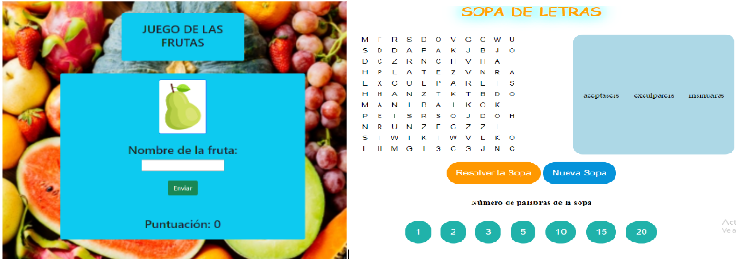

GIRA Coca-Cola
PROYECTO CON IMPACTO POSITIVO
Reto social o medioambiental identificado
Reinserción de personas mayores con Alzheimer y otras demencias, que se encuentren en residencias y reciclaje de material electrónico.
Necesidades detectadas:
- Hace falta una aplicación que cubra las necesidades de personas con Alzheimer en el entrenamiento cognitivo y que tenga un diseño atractivo.
- Reducir residuos y darle una segunda vida al material electrónico.
- Reinserción de personas con demencias en la sociedad.
- Participación intergeneracional.
- Concienciación de una realidad.
Público objetivo:
El público objetivo serían las personas con Alzheimer que se encuentren en residencias, ya que los juegos de estimulación cognitiva están destinados a ellos, pero también afecta a toda la población y al medio ambiente ya que por otro lado vamos a utilizar material reciclado, fomentando el reciclaje y la reutilización.
¿Qué objetivos perseguís con vuestra propuesta?
Objetivo general:
Fomentar el entrenamiento cognitivo de personas con Alzheimer y otras demencias, que se encuentren en residencias, a través de actividades intergeneracionales que incidan positivamente en el medio ambiente.
Objetivos específicos:
- Llegar al máximo número de personas posible
- Reciclar piezas de equipos antiguos para darle una nueva vida
- Fomentar la comunicación intergeneracional
- Favorecer la rehabilitación cognitiva con herramientas tecnológicas
- Crear juegos sencillos, atractivos, intuitivos y jugables para personas con deterioro cognitivo.
¿Cómo cambiará la vida de las personas, o del entorno, positivamente con vuestra solución?
ODS sobre los que nuestro proyecto incide positivamente:
- 3. Salud y bienestar; mejora el entrenamiento cognitivo de los mayores con demencias, y más concretamente en Alzheimer.
- 4. Educación de calidad; acerca la digitalización a personas que no hayan tenido la oportunidad de acercarse antes.
- 5. Igualdad de género; ya que está destinado tanto para hombres como para mujeres.
- 10.Reducción de desigualdades; ya que ayuda a reducir la brecha tecnológica.
- 12. Producción y consumo responsable; por la reutilización de equipos electrónicos reciclados.
- 13. Acción por el clima; ya que se reducen los residuos con esta acción.
- 17. Alianzas para lograr los objetivos; comunicación entre nuestro centro educativo, residencias, la asociación AFAL Alcrebite, Valoriza, servicios medioambientales y los diferentes particulares que han donado equipos.
Propuesta de solución al reto:
Comenzamos en torno a octubre de 2022, cuando fuimos informados sobre nuestra participación en el proyecto Gira Jóvenes. A partir de aquí empezamos a plantear ideas. Al final nos pusimos de acuerdo con intentar mejorar la calidad de vida de personas con Alzheimer y otras demencias ya que es la realidad que viven muchas personas y familias de nuestros entornos más cercanos. Además, ya que tenemos conocimiento de que se producen muchos residuos, pensamos en integrar un plan en el que le diéramos una segunda vida a estos.
De esta manera nació la idea de reciclar y reutilizar material informático para ponerlo a punto y crear unos juegos para ayudar a mejorar el entrenamiento cognitivo de estos mayores. Dio la casualidad de que en torno al 19 y 27 de noviembre fue la semana europea de prevención de residuos; en esta se planteó una campaña de recogida de material electrónico. Para ello se realizó un cartel y se distribuyó por diferentes redes sociales. El jueves 22 de diciembre visitamos la sede de la empresa Valoriza, la cual se encarga de la recogida de residuos en nuestra localidad. Allí nos explicaron cómo realizan esta labor y nos mostraron dónde y cómo recogen específicamente el material electrónico y su posterior reciclaje.

En ese lugar se acordó que nos cederían este material, y posteriormente, el residuo que no pudiéramos aprovechar, lo recogerían. Tras esto, el viernes 13 de enero salimos como noticia en el periódico “El comarcal Baza”, junto con Valoriza tras la visita realizada previamente. Además de Valoriza, otras entidades nos donaron material. Estas fueron:
- IES HISPANIDAD, Santa Fe Granada
- Servicio Público de Empleo Estatal (SEPE)
- Centro de Participación Activa. Ayuntamiento de Baza
- Escuela Oficial de Idiomas (Baza)
- CEIP Ciudad de Baza
- Departamento de Electricidad del IES Pedro Jiménez Montoya
- Alumnos y profesores del IES Pedro Jiménez Montoya
- Vecinos de Baza
Desde el mes de diciembre hasta casi finales del período de tiempo que disponemos para realizar este proyecto, se han ido diseñando y realizando los diferentes juegos de estimulación cognitiva. Conforme fuimos recibiendo información sobre esta enfermedad, se fueron perfeccionando estos para que fueran lo más adaptados posible a las capacidades cognitivas que presenta esta población. La realización de esta parte del proyecto se ha ido extendiendo a lo largo del tiempo por la falta de disponibilidad de tiempo, y conforme íbamos obteniendo información íbamos modificando y mejorando lo realizado.
Para el diseño de los juegos hemos contado con la ayuda del alumnado y profesorado del Ciclo Formativo de Atención a Personas en Situación de Dependencia que han elaborado diferentes cuadernos de ejercicios de estimulación cognitiva para reforzar la memoria.
A continuación se muestran algunos de estos juegos que se insertarán en los distintos equipos informáticos:
La recogida de material informático se extendió durante los meses de noviembre, diciembre y enero. Durante estos meses, además de la recogida se realizó la revisión de los mismos y se cuantificaron los equipos disponibles. Los que se podían arreglar se repararon con las piezas disponibles provenientes de otros ordenadores. Después de esto, se volvió a cuantificar los equipos disponibles finales.
A finales de enero y principios de febrero, más concretamente los días 30, 31 de enero y 1 de febrero asistimos a las primeras sesiones de Activar del proyecto Gira de la mano del personal de AlmaNatura. El miércoles 15 de febrero, AFA Alcrebite se desplazó a nuestro Instituto, Pedro Jimenez Montoya, para dar una charla sobre el Alzheimer y otras demencias. Gracias a esta charla informativa hemos podido comprender mejor esta enfermedad y cómo afecta a nuestros mayores, todo ello nos ha ayudado a crear diferentes juegos útiles e intuitivos para fomentar la prevención de esta demencia y entrenamiento cognitivo. El martes, 17 de febrero, visitamos la asociación AFA Alcrebite. Fuimos a aprender y ver en persona cómo funciona la aplicación que usan en sus sesiones de estimulación cognitiva con los mayores y así poder entender mucho mejor el funcionamiento para poder crear diferentes juegos funcionales y prácticos. Además, pudimos comprobar las dificultades a las que se enfrentan los usuarios a la hora de trabajar con la tecnología.
El miércoles, 22 febrero acudimos a la radio Onda Cero Baza junto con la Asociación AFA Alcrebite para hablar sobre la colaboración entre entidades privadas y prestatarias de atención directa a personas dependientes y centros educativos así como de los beneficios que todo esto nos aporta a los alumnos, alumnas y al colectivo profesional. Además, durante los meses de febrero y marzo analizamos qué sistema operativo sería compatible con los equipos que disponíamos, finalmente nos decidimos por instalar Linux Mint. La etapa en la que instalamos los sistemas operativos en los diferentes equipos se ha extendido hasta abril debido a la falta de tiempo disponible, realizándose esta tarea de manera intermitente.
Desde mitad de abril hacia adelante, se realizan clonaciones de discos de dispositivos que funcionan perfectamente, ya que algunos equipos no admitían el sistema operativo desde un inicio. Para este cometido se utilizó el software “Clonezilla”.
A finales de abril se lleva a cabo un plan para darnos a conocer mediante redes sociales para llegar a más gente. Para esto, se ha creado instagram, facebook, twitter, tiktok y la página web del proyecto. Además, se han creado carteles con un código QR, que al escanearlo redirige al instagram, los cuales se colgarán en puntos estratégicos cómo por ejemplo, la entrada de nuestro centro y el centro de salud donde concurren muchas personas
En las últimas semanas, para finalizar, se han instalado los juegos de entrenamiento cognitivo en los ordenadores, tanto portátiles como fijos. En el caso de los ordenadores fijos, ya que para su uso es necesario la utilización de periféricos, se han estado agrupando los diferentes componentes para formar los diferentes equipos completos. Tras cerciorarnos de que cada uno de los diferentes ordenadores y juegos funcionan correctamente, se donaron estos equipos a las diferentes residencias de nuestra zona.
¿Cómo vas a medir el impacto positivo de tu proyecto?:
Para la evaluación del impacto a corto plazo de los juegos en personas mayores, se plantea la idea de integrar una encuesta de satisfacción al final de la sesión de estimulación cognitiva con estos juegos.
Al finalizar la partida, saldría una ventana dónde nos encontraríamos una pregunta concisa y clara sobre la opinión de la partida. Para facilitar la respuesta a dar, se indicaría esta pregunta en formato escala likert, donde nos entraríamos una escala de tres opciones, las cuales serían representadas por tres emojis personalizados que expresan felicidad, neutralidad y tristeza.
En cuanto a la evaluación a largo plazo, habría que evaluar el cambio en las funciones cognitivas de las personas, y el impacto que ha generado el proyecto en ellas. Para esto, el equipo responsable de las diferentes residencias podrían realizar una evaluación 6 meses después del uso de estos juegos. De esta manera se vería la posible mejoría y ralentización del proceso degenerativo de estas personas. Además, si fuera factible, en un futuro se podría integrar este proyecto con diferentes investigaciones de psicología, neurología y neuropsicología, sobre el alzheimer y el tratamiento de este.
Este posible estudio de investigación se podría plantear con una muestra compuesta por tres grupos. El primero de ellos estaría conformado por personas que realizarían la estimulación cognitiva mediante videojuegos e integrando la tecnología en el plan de intervención. Otro grupo recibiría esta estimulación cognitiva pero de manera tradicional y sin el uso de videojuegos y diferentes tecnologías; por último habría un grupo control con personas que decidan no participar en ningún entrenamiento de estimulación para poder contrastar los resultados. La evaluación de resultados y conclusiones se podría realizar de igual manera, tras la propia participación en la estimulación cognitiva de las diferentes modalidades y la evolución de esta enfermedad tras 6 meses. De esta manera se vería el impacto a corto y largo plazo del impacto de este proyecto pero siguiendo los criterios del método científico.
Equipo formado por: Isabel Apolonia Yeste Sánchez,Juan Diego García Lara, Alejandro Ríos López, Cristina Latorre Aparicio, Ismael Moreno Martínez, Salva Rodríguez Medina, Manu Vico Revelles, Luis Fernando Ocaña Ñato, Carlos Martínez Manzano, Enrique Navarro Collados, Raúl Yelamos García, Laura Rodríguez Perales, Daniel Ramírez Fernández, Víctor Molina Quirante, Juan Pedro Martínez Granados, Juan José Capel, Daniele Valanzano Marín.
Municipio:Baza, Granada.
Nombre completo de vuestro sherpa: Claudia Suárez.
Nombre del proyecto: Regala memoria.